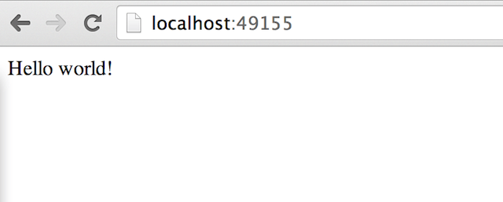

Docker
bazirano na verziji 1.9.1


Fakultet tehničkih nauka u Novom Sadu
Katedra za informatiku
Problemi
- Uvođenje (Deployment)
- Okruženje (Environment)
- Zavisnosti (Dependencies)
- Ponovljivost (Repeatability)
- Automatizacija
Docker
- Automatizacija procesa uvođenja upotrebom softverskih kontejera.
- Izolacija aplikacije i svih njenih zavisnosti putem linux kernel cgroups i namespaces mehanizama.
- Na Windows-u i Mac-u se izvršava u okviru virtuelne mašine.
- Obezbeđivanje identičnog okruženja za rad aplikacije u vreme razvoja, testiranja i produkcije.
- Ponovljivost - izbegavanje konfiguracionih problema pri promeni načina izvršavanja i okruženja(cloud, lokalno...).
- Manje zauzeće resursa u odnosu na virtuelizaciju.
- Veoma popularan. Velika zajednica. Docker Hub - slično GitHub-u ali za tzv. doker slike (Docker images).
- Apache 2.0 licenca.
Arhitektura

- Registries, images, containers
- Union file systems: AUFS, btrfs,...
- Linux kernel namespaces and cgroups
Hello World u dokeru
$ docker run ubuntu:14.04 /bin/echo 'Hello world'
Hello world
Interaktivni kontejner
$ docker run -t -i ubuntu:14.04 /bin/bash
root@af8bae53bdd3:/#
-t- alokacija pseudo terminala-i- spajanje naSTDIN
root@af8bae53bdd3:/# pwd
/
root@af8bae53bdd3:/# ls
bin boot dev etc home lib lib64 media mnt opt proc root run sbin srv
sys tmp usr var
root@af8bae53bdd3:/# exit
"Demonizacija"
$ docker run -d ubuntu:14.04 /bin/sh -c "while true; do echo hello world; sleep 1; done"
1e5535038e285177d5214659a068137486f96ee5c2e85a4ac52dc83f2ebe4147
$ docker ps
CONTAINER ID IMAGE COMMAND CREATED STATUS PORTS NAMES
1e5535038e28 ubuntu:14.04 /bin/sh -c 'while tr 2 minutes ago Up 1 minute insane_babbage
$ docker logs insane_babbage
hello world
hello world
hello world
$ docker stop insane_babbage
insane_babbage
$ docker ps
CONTAINER ID IMAGE COMMAND CREATED STATUS PORTS NAMES
-
-d | --detach- ne "kačiti" se za STDOUT
Pokretanje jednostavne web aplikacije
- Pokretanje jednostavne
Python Flaskaplikacije.
$ docker run -d -P training/webapp python app.py
$ docker ps -l
CONTAINER ID IMAGE COMMAND CREATED
bc533791f3f5 training/webapp:latest python app.py 5 seconds ago
STATUS PORTS NAMES
Up 2 seconds 0.0.0.0:49155->5000/tcp nostalgic_morse
-P- Mapiranje porta iz intervala 32768-61000 na exportovane portove kontejnera- Može i ...
$ docker run -d -p 80:5000 training/webapp python app.py
Python Flask aplikacija
IP adresa
- Ukoliko se kontejner izvršava na drugoj mašini treba nam IP adresa da bi pristupili aplikaciji.
$ docker-machine ip my-docker-vm
192.168.99.100
- Koristiti
http://192.168.1.100:49155/za pristup
"Prečica" za dobijanje preslikanog porta
$ docker port nostalgic_morse 5000
0.0.0.0:49155
Pregled dnevnika (logs)
$ docker logs -f nostalgic_morse
* Running on http://0.0.0.0:5000/
10.0.2.2 - - [23/May/2014 20:16:31] "GET / HTTP/1.1" 200 -
10.0.2.2 - - [23/May/2014 20:16:31] "GET /favicon.ico HTTP/1.1" 404 -
-
-f"forever" - terminal ostaje "zakačen" na STDOUT kontejnera
Pregled procesa
$ docker top nostalgic_morse
PID USER COMMAND
854 root python app.py
Zauzeće resursa kontejnera
$ docker stats redmine2
CONTAINER CPU % MEM USAGE / LIMIT MEM % NET I/O BLOCK I/O
redmine2 0.00% 136.7 MB / 8.046 GB 1.70% 1.874 kB / 648 B 60.42 MB / 196.6 kB
Inspekcija kontejnera
$ docker inspect nostalgic_morse
[{
"ID": "bc533791f3f500b280a9626688bc79e342e3ea0d528efe3a86a51ecb28ea20",
"Created": "2014-05-26T05:52:40.808952951Z",
"Path": "python",
"Args": [
"app.py"
],
"Config": {
"Hostname": "bc533791f3f5",
"Domainname": "",
"User": "",
. . .
Povezivanje za kontejner koji se izvršava
- Ukoliko se pokrene interaktivna sesija pri pokretanju
kontejner navođenje
-t -iparametara može se "otkačiti" konzola saCtrl-P-Q. - Na konzolu kontejnera se opet može povezati sa:
$ docker attach nostalgic_morse
Pristup kontejneru koji se izvršava
- Nekada kontejner nema aktivan
shell. U tom slučaju ukoliko se povežemo saattachnemamo interakciju već imamo samo ispis aplikacije koja se izvršava. - U kontekstu kontejnera koji se izvršava moguće je izvršiti proizvoljnu komandu.
$ docker exec -it mycontainer bash
root@bd57610aa95a:/usr/src/redmine#
- Ne zaboraviti završetak sesije sa
exitiliCtrl-D
Zaustavljanje i uklanjanje kontejnera
$ docker stop nostalgic_morse
nostalgic_morse
$ docker rm nostalgic_morse
nostalgic_morse
Rad sa slikama (images)
- Kontejner koji radi je baziran na slici (image) analogno klasi i instanci/objektu kod OO jezika
- Kod pokretanja, ako slika ne postoji lokalno preuzima se sa udaljenog repozitorijuma (npr. Docker Hub)
Listanje slika
$ docker images
REPOSITORY TAG IMAGE ID CREATED VIRTUAL SIZE
ubuntu 14.04 1d073211c498 3 days ago 187.9 MB
busybox latest 2c5ac3f849df 5 days ago 1.113 MB
training/webapp latest 54bb4e8718e8 5 months ago 348.7 MB
- Repozitorijum sadrži potencijalno više varijanti slike. Na primer ubuntu sadrži verzije 10.04, 12.04, 12.10, 13.04, 13.10 i 14.04
- Da bi se pokrenula određena verzija (tag) slike koristi se komanda
$ docker run -t -i ubuntu:12.04 /bin/bash
- Ukoliko se ne navede oznaka podrazumeva se
latest
Preuzimanje slika
-
runkomanda će automatski preuzeti sliku ukoliko ne postoji lokalno - Slika se može i eksplicitno preuzeti komandom
docker pull
$ docker pull centos
Pulling repository centos
b7de3133ff98: Pulling dependent layers
5cc9e91966f7: Pulling fs layer
511136ea3c5a: Download complete
ef52fb1fe610: Download complete
. . .
Status: Downloaded newer image for centos
$ docker run -t -i centos /bin/bash
bash-4.1#
Pronalaženje doker slike
- Putem Docker Hub sajta
- ...ili upotrebom
docker searchkomande
$ docker search sinatra
NAME DESCRIPTION STARS OFFICIAL AUTOMATED
training/sinatra Sinatra training image 0 [OK]
marceldegraaf/sinatra Sinatra test app 0
mattwarren/docker-sinatra-demo 0 [OK]
luisbebop/docker-sinatra-hello-world 0 [OK]
bmorearty/handson-sinatra handson-ruby + Sinatra for Hands on with D... 0
subwiz/sinatra 0
bmorearty/sinatra 0
. . .
- OFFICIAL - Podrška od strane Docker, Inc.
- AUTOMATED - Automatizovana izgradanja sa GitHub ili Bitbucket-a.
Vrste slika
- base ili root slike - izgrađene i podržane od strane Docker Inc.
Identifikuju se prostim imenom (npr.
ubuntu) - korisničke slike (user images) -
imaju korisničko ime kao prefix (npr.
training/sinatra). Izgrađeni i podržani od strane članova doker zajednice.
Preuzimanje korisničke slike i startovanje kontejnera
$ docker pull training/sinatra
$ docker run -t -i training/sinatra /bin/bash
root@a8cb6ce02d85:/#
Kreiranje slika
- Dva načina:
- Interaktivno ažuriranje stanja kontejnera i perzistencija nove verzije
commitoperacijom. - Kreiranje
Dockerfilefajla koji opisuje postupak izgradnje nove slike polazeći od postojeće i primenom niza komandi. - Koristiti drugi način kad god je moguće.
Interaktivno ažuriranje stanja kontejnera
$ docker run -t -i training/sinatra /bin/bash
root@0b2616b0e5a8:/#
root@0b2616b0e5a8:/# gem install json
...
root@0b2616b0e5a8:/# exit
$ docker commit -m "Added json gem" -a "Kate Smith" \
0b2616b0e5a8 ouruser/sinatra:v2
4f177bd27a9ff0f6dc2a830403925b5360bfe0b93d476f7fc3231110e7f71b1c
-
-m- commit poruka -
-a- autor
Upotreba nove slike
$ docker images
REPOSITORY TAG IMAGE ID CREATED VIRTUAL SIZE
training/sinatra latest 5bc342fa0b91 10 hours ago 446.7 MB
ouruser/sinatra v2 3c59e02ddd1a 10 hours ago 446.7 MB
ouruser/sinatra latest 5db5f8471261 10 hours ago 446.7 MB
$ docker run -t -i ouruser/sinatra:v2 /bin/bash
root@78e82f680994:/#
Izgradnja slike upotrebom Dockerfile fajla
$ mkdir sinatra
$ cd sinatra
$ touch Dockerfile
Sadržaj fajla
# This is a comment
FROM ubuntu:14.04
MAINTAINER Kate Smith <ksmith@example.com>
RUN apt-get update && apt-get install -y ruby ruby-dev
RUN gem install sinatra
Docker build komanda
$ docker build -t ouruser/sinatra:v2 .
Sending build context to Docker daemon 2.048 kB
Sending build context to Docker daemon
Step 1 : FROM ubuntu:14.04
---> e54ca5efa2e9
Step 2 : MAINTAINER Kate Smith <ksmith@example.com>
---> Using cache
---> 851baf55332b
Step 3 : RUN apt-get update && apt-get install -y ruby ruby-dev
---> Running in 3a2558904e9b
Selecting previously unselected package libasan0:amd64.
(Reading database ... 11518 files and directories currently installed.)
...
Removing intermediate container 3a2558904e9b
Step 4 : RUN gem install sinatra
---> Running in 6b81cb6313e5
unable to convert "\xC3" to UTF-8 in conversion from ASCII-8BIT to UTF-8 to US-ASCII for README.rdoc, skipping
unable to convert "\xC3" to UTF-8 in conversion from ASCII-8BIT to UTF-8 to US-ASCII for README.rdoc, skipping
Successfully installed rack-1.5.2
Successfully installed tilt-1.4.1
...
Removing intermediate container 6b81cb6313e5
Successfully built 97feabe5d2ed
Docker context
- Izgradnju slike obavlja doker demon proces.
- Pre početka klijent šalje zapakovan sadržaj foldera koji je prosleđen kao parametar.
- Ovaj folder minimalno treba da ima
Dockerfileali može imati i dodatne fajlove i foldere koji se mogu po potrebi ugraditi u kontejner komandomADD.
Napomena:Celokupan folder se pakuje i šalje demon procesu. Paziti da folder sadrži samo zaista potrebne fajlove.
Označavanje slika
- Svakoj verziji slike možemo dati simboličku oznaku (tag).
$ docker tag 5db5f8471261 ouruser/sinatra:devel
$ docker images ouruser/sinatra
REPOSITORY TAG IMAGE ID CREATED VIRTUAL SIZE
ouruser/sinatra latest 5db5f8471261 11 hours ago 446.7 MB
ouruser/sinatra devel 5db5f8471261 11 hours ago 446.7 MB
ouruser/sinatra v2 5db5f8471261 11 hours ago 446.7 MB
Slanje slika na Docker Hub
$ docker push ouruser/sinatra The push refers to a repository [ouruser/sinatra] (len: 1) Sending image list Pushing repository ouruser/sinatra (3 tags) . . .Uklanjanje slike sa računara
$ docker rmi training/sinatra
Untagged: training/sinatra:latest
Deleted: 5bc342fa0b91cabf65246837015197eecfa24b2213ed6a51a8974ae250fedd8d
Deleted: ed0fffdcdae5eb2c3a55549857a8be7fc8bc4241fb19ad714364cbfd7a56b22f
Deleted: 5c58979d73ae448df5af1d8142436d81116187a7633082650549c52c3a2418f0
Dockerfile
Povezivanje doker kontejnera
Upravljanje podacima u kontejnerima
dockviz
- Alat za vizualizaciju doker slika
- Dostupan na GitHub-u
- Može se instalirati kao doker slika:
$ docker pull nate/dockviz
Using default tag: latest
latest: Pulling from nate/dockviz
8bd831364921: Pull complete
3dfb5e1486b5: Pull complete
607d274e6daa: Pull complete
Digest: sha256:9afe152b794ae8480b230545ec75bc81f5e11a0b9d28158bb609479de5a95a72
Status: Downloaded newer image for nate/dockviz:latest
$ alias dockviz="docker run --rm -v /var/run/docker.sock:/var/run/docker.sock nate/dockviz"
Vizualizacija veza između kontejnera
$ dockviz containers -d | dot -Tpng -o containers.png
Vizualizacija međuzavisnosti i veličina slika
$ dockviz images -t -i
└─511136ea3c5a Virtual Size: 0.0 B
├─f10ebce2c0e1 Virtual Size: 103.7 MB
│ └─82cdea7ab5b5 Virtual Size: 255.5 KB
│ └─5dbd9cb5a02f Virtual Size: 1.9 KB
│ └─74fe38d11401 Virtual Size: 105.7 MB Tags: ubuntu:12.04, ubuntu:precise
├─ef519c9ee91a Virtual Size: 100.9 MB
│ └─07302703becc Virtual Size: 251.0 KB
│ └─cf8dc907452c Virtual Size: 1.9 KB
│ └─a7cf8ae4e998 Virtual Size: 70.1 MB Tags: ubuntu:12.10, ubuntu:quantal
│ ├─e18d8001204e Virtual Size: 29.4 KB
│ │ └─d0525208a46c Virtual Size: 71.0 B
│ │ └─59dac4bae93b Virtual Size: 71.2 MB
│ │ └─89541b3b35f2 Virtual Size: 269.3 MB
│ │ └─7dac4e98548e Virtual Size: 0.0 B
│ │ └─341d0cc3fac8 Virtual Size: 0.0 B
...